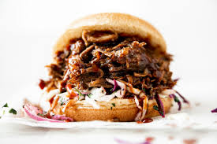

Slow Cooker Pulled Pork

Description
Juicy slow cooker style pulled pork recipe. You can throw this into the slow cooker in just a few minutes then go about your day. Come back a few hour later and you'll have a enough juicy pulled pork to feed an army, or a mid-sized sports ball team. Add some slaw, slap it on a bun, killer pulled pork sandwich. Smother some tortilla chips, add some sauce and your favorite toppings, perfect bbq nachos.
Ingredients
4-5 pounds pork shoulder or butt
2 teaspoons garlic, minced and dehydrated
2 teaspoons onion, minced and dehydrated
1/4 teaspoon black pepper
1/4 teaspoon cayenne pepper
1 teaspoon liquid smoke
1 liter of your favorite full sugar soda
20 oz bbq sauce
Steps
Add pork to the slow cooker
Season pork with garlic, onion, black pepper, and cayenne
Add liquid smoke then cover with soda until the pork is fully submerged.
Set slow cooker to low and cook for 8-10 hours
Transfer pork to a serving platter and shred with two large forks
Mix in bbq sauce now or leave naked
Enjoy!